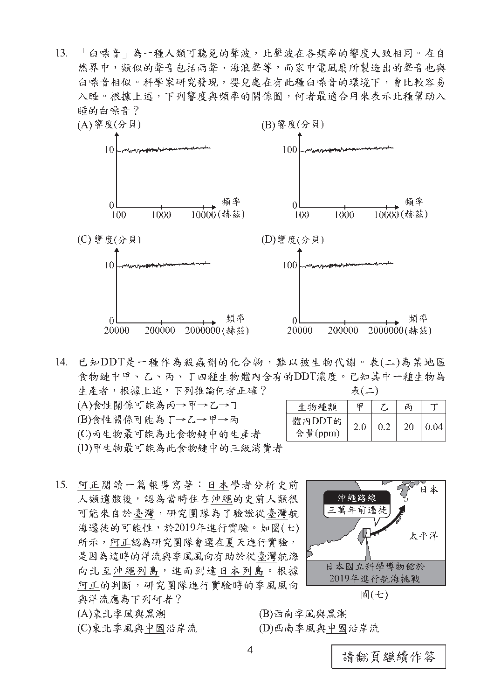
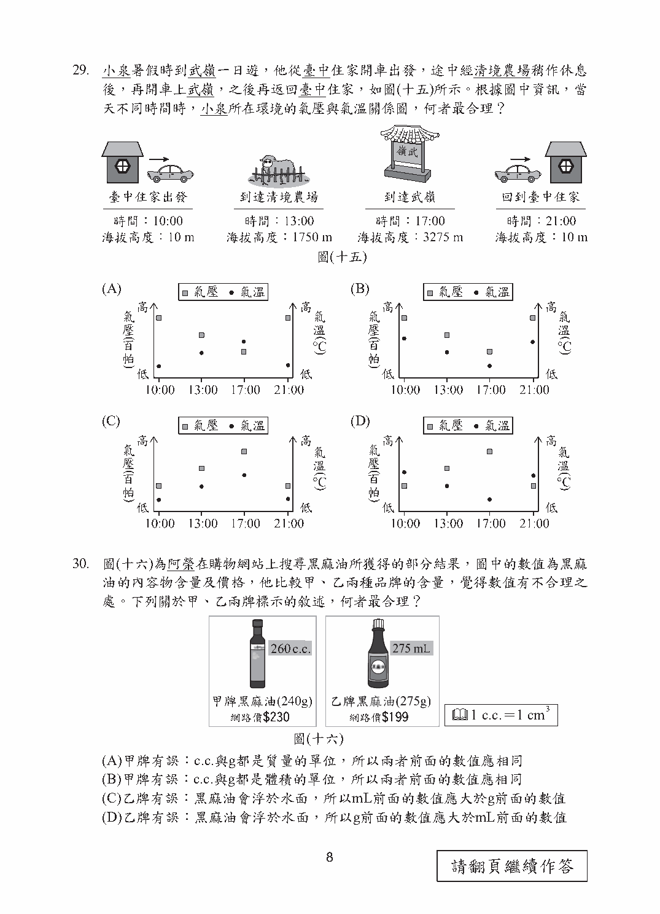

第 13 題對應：八上3-3
「白噪音」為一種人類可聽見的聲波，此聲波在各頻率的響度大致相同。在自然界中，類似的聲音包括雨聲、海浪聲等，而家中電風扇所製造出的聲音也與白噪音相似。科學家研究發現，嬰兒處在有此種白噪音的環境下，會比較容易入睡。根據上述，下列響度與頻率的關係圖，何者最適合用來表示此種幫助入睡的白噪音？

此題選項為圖形，請參閱下方官方題本頁面圖片作答。
正解 (A) 白噪音的定義是「各頻率的響度大致相同」，故適合的響度-頻率關係圖應呈現：響度不隨頻率變化而有明顯起伏，在各頻率上的響度值大致持平。
第 25 題對應：生物2-2
在超市買到的蘋果可能是幾個月前就已經採摘下來了。為了長時間保存，會在蘋果表面塗上食用蠟，減少與氧氣接觸。蘋果熟化過程會將澱粉轉成糖，過程中會需要氧氣並產生二氧化碳，所以可藉由調整蘋果存放環境的氣體比例，減緩蘋果的熟化過程，延長保存期限。上述提及調整存放環境的氣體比例，其示意圖最可能為下列何者？
此題選項為圖形，請參閱下方官方題本頁面圖片作答。
正解 (D) 蘋果熟化過程需要氧氣、產生二氧化碳，即進行呼吸作用。要減緩熟化速度，應降低環境中氧氣比例、提高二氧化碳比例，以抑制呼吸作用速率，故應選擇氧氣比例降低、二氧化碳比例升高的示意圖。
第 29 題對應：九下3-1
小泉暑假時到武嶺一日遊，他從臺中住家開車出發，途中經清境農場稍作休息後，再開車上武嶺，之後再返回臺中住家，如圖(十五)所示。根據圖中資訊，當天不同時間時，小泉所在環境的氣壓與氣溫關係圖，何者最合理？

此題選項為圖形，請參閱下方官方題本頁面圖片作答。
正解 (B) 海拔愈高，大氣壓力愈低，氣溫通常也隨海拔升高而降低(對流層中氣溫隨高度增加而遞減)；依小泉行程中海拔先升高(往武嶺)後降低(返回臺中)的變化趨勢，氣壓與氣溫應呈現對應的先降後升變化。
第 32 題對應：八下3-2
下列為某牌口香糖廣告的說明：人體口腔中的環境接近中性，在用餐後一段時間會變酸，而增加蛀牙機率。除了每日正確刷牙外，在餐後嚼食無糖口香糖，可刺激唾液分泌，有效「平衡」口中酸性。此廣告搭配了兩張圖用以輔助說明，一張為圖(十八)，另一張圖最可能為下列何者？
此題選項為圖形，請參閱下方官方題本頁面圖片作答。
正解 (C) 廣告訴求嚼食口香糖可刺激唾液分泌，以「平衡」餐後偏酸的口腔環境，故另一張圖最可能呈現：嚼食口香糖促進唾液分泌後，口腔pH值逐漸從偏酸回升、趨向中性的變化情形。